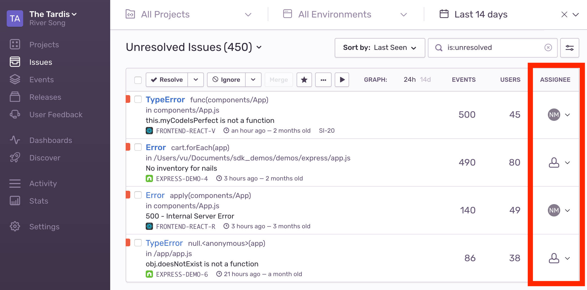
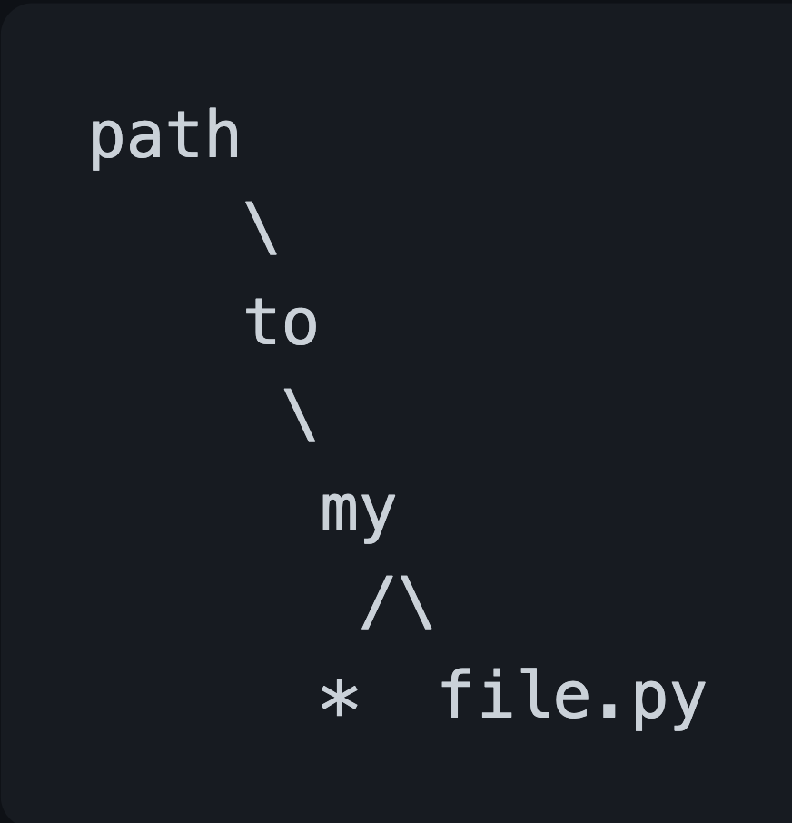

Python, Rust and Regexes
whoami
- Nisanthan Nanthakumar
- Senior Engineer @ Sentry
- The photo of me is from 11th grade
Sentry is an error and performance monitoring tool that gives engineers
comprehensive visibility into their code so they can see the issues that
matter in real-time, solve them faster with actionable details, and
learn from historical trends to optimize code health overtime.
Open Source
Django and React

screenshot!!!
Capture an error. Then what?
You've just built the next big app.
Instrumented with Sentry SDK
Got your first bug in production
Who should we assign to fix this?
We want to need to figure out who is the person/team that can resolve
this issue and assign it to them.
The tools
- Ownership Rules (pre-2020)
- CODEOWNERS (industry standard)
Ownership Rules lets you create rules on the stacktrace filepaths, urls
or event tags. This was our original method to provide Issue Ownership
for our users.
Companies adopted the standard set by GitHub/GitLab. Companies will
only use maintain 1 set of rules and thats going to be
CODEOWNERS.
Import their CODEOWNERS file. Not so easy.
Source code filepaths != Stacktrace filepaths
CI/CD -> transform, bundle, minify, deploy
Code Mappings
Code Mapping * (Source code filepath) == Stacktrace filepath
n number of Code Mappings
combined_CODEOWNERS = [CODEOWENRS * code_mapping for code_mapping in list_of_code_mappings]
for rule in combined_CODEOWNERS:
for filepath in stacktrace:
return to_regex(rule).search(filepath)
Does this scale?
- O(n^2)
- We calculate on every event
- CODEOWNERS can get up to 3mb
- CODEOWNERS limited to 100k characters
Ideas
- use Rust's regex engine
- use trie
Trie
- tree data structure
- lookups are O(m) where m is the string length
- tradeoff is memory
path/to/my/file.py
path/to/my/*

*/to/my/file.py
path/*/my/file.py
Requires regex engine for these cases
Start with Idea #1
combined_CODEOWNERS = [CODEOWENRS * code_mapping for code_mapping in list_of_code_mappings]
for rule in combined_CODEOWNERS:
for filepath in stacktrace:
return to_regex(rule).search(filepath)
Rewrite!! Always fun!
Rust -> C ABI that is used by Python
ABI stands for Application Binary Interface
relay-cabi/src/processing.rs
#[no_mangle]
#[relay_ffi::catch_unwind]
pub unsafe extern "C" fn relay_is_codeowners_path_match(
value: *const RelayBuf,
pattern: *const RelayStr,
) -> bool {
let regex = translate_codeowners_pattern((*pattern).as_str());
return Ok(regex.is_match((*value).as_bytes()));
}
relay_ffi::catch_unwind is a macro that captures errors and panics in a
thread-local on `unsafe` functions.
no_mangle is a macro that prevents the compiler from mangling the
symbols. That is because C does not understand mangling.
py/sentry_relay/processing.py
def is_codeowners_path_match(value, pattern):
if isinstance(value, text_type):
value = value.encode("utf-8")
return rustcall(lib.relay_is_codeowners_path_match, make_buf(value), encode_str(pattern))
rustcall calls the rust method and does some error handling.
Cut a new library release and now we can use this method in Sentry
Rewrote in rust. Now what?
Is this an improvement?
Gotta benchmark
pyperf
Test Conditions:
- Replicate the expected max load.
- 3mb CODEOWNERS with 5 code mappings
| Benchmark |
python_implementation |
rust_implementation |
| Mean |
12.9 sec / 250.0 MB |
12.8 sec / 250.9 MB |
| Median |
12.0 sec / 250.8 MB |
12.7 sec / 250.6 MB |
Not really an improvement
Run a benchmark test where the implementation diverges
| Benchmark |
python_implementation |
rust_implementation |
| Mean |
28.7 us |
121 us |
| Median |
26.5 us |
123 us |
Why is Rust implementation slow?
Regex compilation takes a long time.
Time to look at source code.
Now create a LRU Cache for our Rust implementation
Benchmark again
| Benchmark |
python_implementation |
rust_implementation |
| Mean |
15.5 sec |
8.90 sec |
| Median |
15.3 sec |
8.66 sec |
So it is faster. But we need to test in prod.
Feature flag it to our sentry org
| Benchmark |
python_implementation |
rust_implementation |
| p99 |
0.3138660 sec |
0.1863830 sec |
| Mean |
0.0251634 sec |
0.0222657 sec |
| Median |
0.0177220 sec |
0.0166900 sec |
p99 shows the difference in speeds
Test with 15mb combined CODEOWNERS
| Benchmark |
python_implementation |
rust_implementation |
| p99 |
52.955376 sec |
20.571008 sec |
| Median |
45.749216 sec |
18.598373 sec |
Faster, but not the magnitude faster I was expecting.
Python's regex engine is already pretty fast.
Is this good enough?
Probably not.
Shortcut in engineering: Change the system requirements.
Do we really need to calculate on every event?
Nope. We should debounce events and prevent unnecessary calculations.
Assignments usually shouldn't change on every event
Monitor and limit the fallout
If this isn't enough, we can implement the trie.
This has it's own tradeoffs. Space complexity is O(m*n)
What we could have done better.
- Should have gathered current system metrics in the beginning.
- Could have used a Profiler (Sentry Profiler)